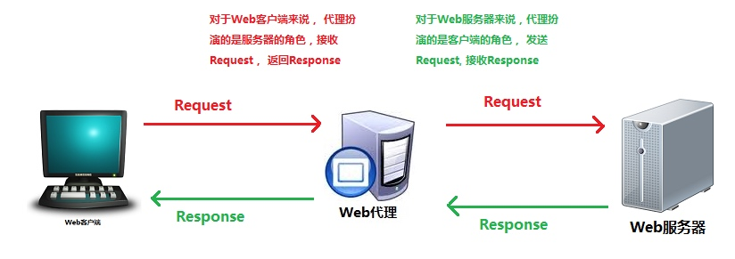
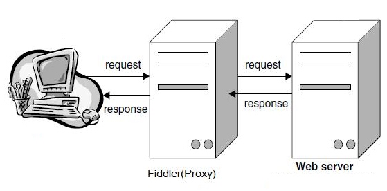
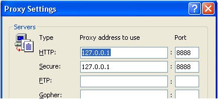
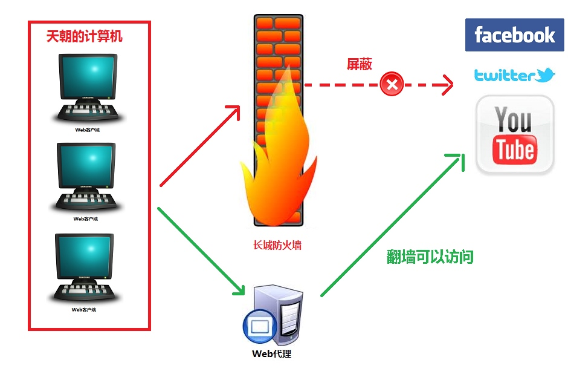
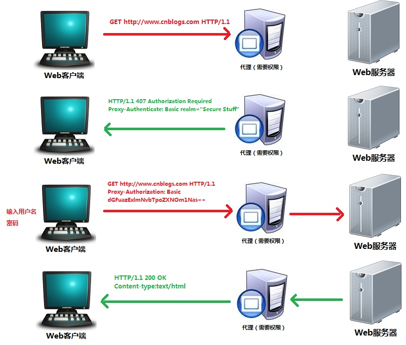

HTTP协议 (五) 代理
这次介绍代理服务器， 代理服务器是HTTP协议中一个重要的组件， 发挥着重要的作用。 本文介绍一些HTTP代理服务器的概念和工作原理
什么是代理服务器
Web代理（proxy）服务器是网络的中间实体。 代理位于Web客户端和Web服务器之间，扮演“中间人”的角色。
HTTP的代理服务器即是Web服务器又是Web客户端。

Fiddler就是个典型的代理
Fiddler 是以代理web服务器的形式工作的,它使用代理地址:127.0.0.1, 端口:8888. 当Fiddler退出的时候它会自动注销代理，这样就不会影响别的程序。


代理的作用一， FQ
很多人都喜欢用Facebook， 看youTube。但是我们在天朝，天朝有The Great of Wall(长城防火墙)，屏蔽了这些好网站。 怎么办? 通过代理来跳墙，就可以访问了。
自己去寻找代理服务器很麻烦， 一般都是用FQ软件来自动发现代理服务器的。

代理的作用二， 匿名访问
经常听新闻，说”某某某“在网络上发布帖子，被跨省追缉了。 假如他使用匿名的代理服务器，就不容易暴露自己的身份了。
http代理服务器的匿名性是指： HTTP代理服务器通过删除HTTP报文中的身份特性（比如客户端的IP地址， 或cookie,或URI的会话ID）， 从而对远端服务器隐藏原始用户的IP地址以及其他细节。 同时HTTP代理服务器上也不会记录原始用户访问记录的log(否则也会被查到)。
代理的作用三， 通过代理上网
比如局域网不能上网， 只能通过局域网内的一台代理服务器上网。
代理的作用四， 通过代理缓存，加快上网速度
大部分代理服务器都具有缓存的功能，就好像一个大的cache， 它有很大的存储空间，它不断将新取得数据存储到它本地的存储器上， 如果浏览器所请求的数据在它本机的存储器上已经存在而且是最新的，那么它就不重新从Web服务器取数据，而直接将存储器上的数据传给用户的浏览器，这样就能显著提高浏览速度。
代理的作用五：儿童过滤器
很多教育机构， 会利用过滤器代理来阻止学生访问成人内容。

代理认证，和407状态码
代理服务器也可以需要权限认证， HTTP定义了一种名为代理认证（Proxy authentication）的机制。 这种机制可以阻止对内容的请求。
当浏览器访问需要认证的代理时， 代理服务器会返回407 Authorization Required,告诉浏览器输入用户名和密码。

使用代理服务器的安全问题
代理服务器和抓包工具（比如Fiddler）都能看到http request中的数据。 如果我们发送的request中有敏感数据，比如用户名，密码，信用卡号码。这些信息都会被代理服务器看到。所以非常危险。 所以我们一般都是用HTTPS来加密Http request. 这样代理服务器就看不到里面的数据了。
如何搭建代理服务器
可以使用CCproxy, 和Squid 来搭建代理服务器。